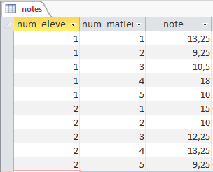

Introduction
Définition
Une base de données (« BD » ou « BDD ») est un lot d'informations stockées dans une mémoire de masse, d'une façon structurée et organisée.
Cette organisation a pour but de faciliter la manipulation des données c-à-d l'ajout, la suppression, la mise à jour et/ou l'extraction de données.
L'outil (ou le logiciel) permettant de travailler sur une base de données est appelé SGBD (Système de Gestion de Bases de Données).
Parmi les SGBD les plus connus on peut citer : Oracle, SQL Server, Access, MySQL.
Dans ce cours nous allons utiliser le SGBD intégré avec la suite office : Access .
Table
Les données d'une base de données sont stockées dans des tables .
Une table est un tableau contenant des enregistrements ayant une même structure ou ayant les mêmes
champs .
Exemple de la structure d'une table
Les champs de la table sont : Nom, Prénom, Sexe, Adresse, Ville et Code Postal.
Tables
Organisaton
Une table possède une structure formée par ses champs . Elle sert à enregistrer des données dans des
enregistrements ayant cette structure.
Champ
Un champ est caractérisé par son nom , son type et sa taille .
Caractéristiques d'un champ
Enregistrement
Un enregistrement est constitué par l'ensemble des valeurs attribuées à l'ensemble de ses champs.
Exemple d'un enregistrement dans une table Eleves
Clé primaire
Au moins un champ de la table doit servir comme clé primaire pour la table. Une clé primaire permet d'identifier un enregistrement d'une façon unique.
Identification de la clé primaire
Question : Déterminer quelle est la clé primaire dans la table Eleves ?
Table eleves
La clé primaire possède plusieurs avantages dont :
Elle facilite et accélère la recherche des informations dans une table.
Elle empêche l'utilisateur de saisir la même information deux fois.
Schéma
Le schéma d'une table est donné par l'ensemble de ses attributs (Champs). La clé primaire doit être soulignée.
Table eleves
Le schéma de la table eleves est :eleves(num_eleve , nom, prenom,
genre, adresse, ville, code_postal)
Question : Donner les schémas des tables suivantes ?
Table matieres

Table notes
Relations
Problème
Soit la table suivante extraite de la base de données d'une agence de location de voitures :
Table location
Cette table contient plusieurs anomalies :
Elle contient des redondances de données : les informations d'un véhicule et celles d'un client sont répétés plusieurs fois.
Anomalie de suppression : La suppression de la voiture OpelAstra entraine la suppression des informations du client Beji Mohamed.Anomalie de mise à jour : Si Soussi Slim change son adresse il faudra modifier tous les enregistrements qui portent son nom.Anomalie d'insertion : Lorsqu'on souhaite enregistrer une nouvelle location pour la voiture Peugeot 406 on peut écrire par mal attention Peuegot 640.
Question : Quelle est la solution ?
Solution
On remarque que cette table contient les informations des véhicules et celles des clients.
On pourra les séparer en deux tables comme suit :
Table clients
Table vehicules
Malgré la décomposition que nous avons effectué sur cette table, nous faisons face à un autre problème :
Comment faire pour dire que tel client vient de louer telle voiture ?
Relation
Nous devons relier ces deux tables à une troisième table nommée location_vehicule .
Table location_vehicule
Et nous devons définir les liaisons entre les trois tables.
Relation entre les tables
Types de relations
Il existe trois types de relations : un à un, un à plusieurs, plusieurs à plusieurs.
Relation un à un
Un camion est un type de véhicule, une voiture est un type de véhicule d’où un véhicule ne peut pas être un camion et une voiture d’où la relation un à un.
Relation un à un
Relation un à plusieurs
Dans le diagramme ci-dessous un client peut effectuer plusieurs locations. La relation entre la table clients et location_vehicule est dite relation un à plusieurs.
Dans la relation indiquée, entre les tables clients et location_vehicule, la table clients est appelée
table mère et la table location_vehicule est dite table fille
Relations entre les tables
Question : Identifier une deuxième relation un à plusieurs dans ce diagramme. Identifier la table mère et la table fille dans cette relation.
Relation plusieurs à plusieurs
Dans le diagramme précédent plusieurs Véhicules peuvent être louées par plusieurs Clients d’où il existe une relation plusieurs à plusieurs entre les tables Clients et Véhicule.
Mise en garde
Pour créer une relation entre deux tables il faut que :
Les champs reliés possèdent le même type de donnée et la même taille.
La valeur tapée pour une clé étrangère (dans la table fille) corresponde à une valeur tapée comme
clé primaire (dans la table mère).
Erreur, une relation entre deux champs de types différents
Erreur d'intégrité référentielle, la valeur tapée dans la table fille n'existe pas dans la table mère
Requêtes
Présentation
Une base de données peut être exploitée à travers des requêtes .
Il existe plusieurs types de requêtes :
Les requêtes de sélection : pour extraire des informations filtrées et triés à partir des tables.
Les requêtes d'insertion : pour insérer de nouvelles valeurs dans une table.
Les requêtes de mise à jour : pour mettre à jour les valeurs contenues dans une table.
Les requêtes de suppression : pour supprimer les valeurs inutiles dans une table.
üìπ Requ√™tes de s√©lection
On demande de trouver les noms des élèves qui ont obtenus une note inférieure à 1 en Anglais
üìπ Requ√™tes d'insertion
On demande d'insérer un nouvel élève (Mhiri Seifeddine) dans la table Eleves.
üìπ Requ√™tes de mise √† jour
On demande d'ajouter un bonus de 1,5 en Anglais pour tous les élèves.
üìπ Requ√™tes de suppression
On demande de supprimer l'élève, Seifeddine Mhiri, en utilisant son ideleve.
Application
Créer une requête qui permet de retourner le nom et le prénom des élèves qui possèdent une note inférieure à 10 en Français.
Créer une requête qui permet de retourner le nom et le prénom des élèves qui ont une note inférieure à 10 en Anglais et en Français.
Afficher les notes de tous les élèves en français. Trier les élèves par leurs noms et leurs prénoms.
Afficher la liste des élèves, qui ont des notes supérieures à 16, triée par leurs noms et prénoms.
Afficher les notes de BEN Slimane Slim dans toutes les matières.
Afficher la moyenne de BEN Slimane Slim en Français.
üìπ Fonctionnalit√©s
Formulaires
On veut insérer un nouvel élève : Abid Sami.
Ses notes sont dans le tableau suivant :
idmatiere
note
Français
15
Français
17
Anglais
19.5
Anglais
18.75
Informatique
14
Informatique
18
Il n'est pas pratique d'insérer ces données directement dans la table Notes ou en utilisant des requêtes d'insertion. On préfère utiliser un formulaire pour cette tâche
Les formulaires sont des outils pratiques pour permettre l'entrée/la saisie aisée des données dans une ou plusieurs tables.
Utilisation d'un formulaire pour l'insertion des notes
üìπ Etats
Les états permettent de créer des rapports à partir des données et des requêtes enregistrées dans les tables d'une base de données. Les états sont généralement destinés à l'impression.
Question : Créer un état pour afficher les notes des élèves classées par matière.
Etat des notes des élèves classées par matière
üìπ Importation de donn√©es
Dans Access, il est possible d'importer les données depuis Excel.
Question : On désire importer les feuilles de calcul (Eleves, Matieres, et Notes) d'un classeur Excel dans une base de données Access.
La vidéo suivante donne un exemple de cette opération en utilisant les données du fichier Excel : Donnees.xls
üìπ Exportation de donn√©es
Parfois, on préfère utiliser Excel pour réaliser des calculs sur les données d'une table.
Access permet d'exporter les données d'une table sous forme d'une feuille Excel.
Question : Exporter le contenu de la table nuitées dans un fichier nuitées. La base de données à utiliser :
La vidéo suivante donne un exemple de cette :
TP
TP N°1 - Gestion Factures
Créer les tables suivantes :
Clients
IdClient
Factures
NumFacture
Articles
IdArticle
Articles
NumFacture IdArticle
Etablir les relations suivantes entre les tables :
Insérer les données suivantes :
Créer les formulaires suivants :
Créer l'état suivant :
TP N°2 - Gestion Livres
On donne le schéma suivant de la base de données « Gestion_Livres » :
Télécharger la base de donnée à partir de ce lien : Base de données
On demande de réaliser les requêtes de sélection suivantes :
Afficher la liste des livres (RefLivre, Titre) par ordre alphabétique.
Afficher la liste des livres (RefLivre, Titre, NbPages) par ordre décroissant du nombre de pages.
Afficher la liste des livres (RefLivre, Titre, DateEdition) du plus récent au plus vieux.
Afficher les auteurs (Nom, Pays) groupés par pays.
Afficher les noms des auteurs tunisiens par ordre alphabétique de leurs noms.
Afficher les noms des auteurs (Nom, Pays) d’un pays donné par ordre alphabétique de leurs noms.
Afficher les livres (RefLivre, Titre, NbPages) de moins de 100 pages par ordre décroissant du NbPages.
Afficher les livres (RefLivre, Titre, DateEdition) des livres édités en mois de Mars 2018.
Afficher les livres (RefLivre, Titre) des livres qui contiennent le mot « Win ».
Afficher le prix d’achat du livre (RefLivre, Titre, PrixAchat) ayant comme RefLivre 114.
Afficher la date d’édition (RefLivre, Titre, DateEdition) des livres qui commencent par le mot « Astuce » en ordre croissant de la Date d’édition.
Afficher les livres (RefLivre, Titre, NbPages) qui contiennent entre 200 et 500 pages.
Afficher les noms des auteurs de tous les livres (RefLivre, Titre, Nom) ordonnés par ordre alphabétique des titres des livres.
Afficher les noms des auteurs qui ont publié un livre au mois d’Avril 2018 (RefLivre, Titre, Nom, DateEdition).
Afficher les titres des livres (RefLivre, Titre, Nom) publiés par des écrivains de l’Egypte.
Afficher les titres des livres (RefLivre, Titre) qui ont une 2nde, afficher les titres des livres sans redondances.
Afficher les prix d’achats (RefLivre, Titre, PrixAchat) des livres publiés par des auteurs Libyéens sans redondances et par ordre croissant du prix.
Afficher les titres des livres (RefLivre, Titre) publiés par « Ayoub Bouchiba ».
Afficher le nombre de livres enregistrées dans la base.
Afficher le nombre de livres qui comptent moins de 200 pages.
Afficher le nombre de livres qui ont un prix d’achat compris entre 10DT et 20DT.
Afficher le prix maximal et le prix minimal des livres.
Afficher le titre du livre qui possède un nombre maximal de pages.
Afficher le nombre d’auteurs (RefLivre, Titre, NbAuteurs) de chaque livre.
TP N°3 - Gestion de films
Afin de gérer les ventes de billets dans une salle de cinéma, on se propose de présenter les données nécessaires dans le tableau suivant :
Feuille Billets_Vendus
A l'aide du logiciel tableur disponible :
Saisir le tableau ci-dessus, à partir de la cellule A1, dans une feuille à nommer Billets_Vendus et enregistrer le classeur sous le nom Billets_Cinema dans votre dossier de travail.
Appliquer la même mise en forme utilisée dans le tableau ci-dessus.
Remplir la colonne Prix , par le prix de chaque billet selon le type du film.
Utiliser la mise en forme conditionnelle pour mettre en vert les billets dont la durée de film dépasse 2 heures.
Copier les doonnée de la plage A1:C4 dans une nouvelle feuille à nommer TypeFilm .
Copier les données de la plage A6:E15 dans une nouvelle feuille à nommer Billets .
A partir de la feuille Billets_Vendus , créer dans une nouvelle feuille de calcul à nommer TCD_Film , un tableau croisé dynamique permettant de répartir les prix des billets par type de film.
A l'aide du logiciel de gestion de bases de données disponible :
Créer, dans votre dossier de travail, la base de données intitulée Gestion_billets décrite par le schéma relationnel suivant :
Film(IdFilm , Titre)
TypeFilm(CodTypFilm , TypFilm, Tarif)
Billet(NumBillet , DateFilm, DureeFilm, CodTypFilm, IdFilm)
Importer les données de la table Billet à partir de la feuille de calcul Billet .
Importer les données de la table TypeFilm à partir de la feuille de calcul TypeFilm .
Créer la table Film et la remplir par les données du tableau suivant :
Contenu de la table Films
Importer le reste des données à partir du fichier bac2017_01.xlsx :
Importer les données de la table Billet à partir de la feuille de calcul Billet .
Importer les données de la table Film à partir de la feuille de calcul Film .
Créer les relations entre les tables de cette base de données.
Créer les requêtes suivantes :
Augmenter les Tarif des films de 20%.
Faire une promotion de 45% sur le Tarif des films FD04 .
Afficher la liste des billets vendus (NumBillet, Titre, Durée) pour les films dont la durée dépasse 2 heures.
Afficher la liste des des billets vendus (NumBillet, DateFilm) pour le film Skyscraper , trier le résultat par ordre décroissant de la date.
Afficher la liste des films Film 2D sans répétitions. Trier le résultat par ordre alphabétique du titre.
Afficher le nombre de billets vendus dont le code du type de film est FD04 , en utilisant la commande Totaux .
Afficher le nombre de billets vendus de chaque code dy type de film CodeTypFilm . Ordonner par ordre croissant du nombre de ventes.
Afficher les billets vendus (NumBillet, Titre, DateFilm) durant la première semaine du mois de Septembre.
Afficher la liste des films (Titre, DateFilm) qui seront présentés à 11h durant la première quinzaine du mois de Septembre.
Afficher la date de la première sortie de tous les films présentés (Titre, DateFilm).
Afficher les dates de présentations (DateFilm, Titre) d'un film donné.
Afficher le nombre de présentations de tous les films, ordonnées par titre.
Afficher la liste des films (Titre, DateFilm) présentés le 25/09/2018.
Afficher le titre du film qui a été présenté le plus de fois.
Afficher le top 5 des films du point de vue nombre de présentations.